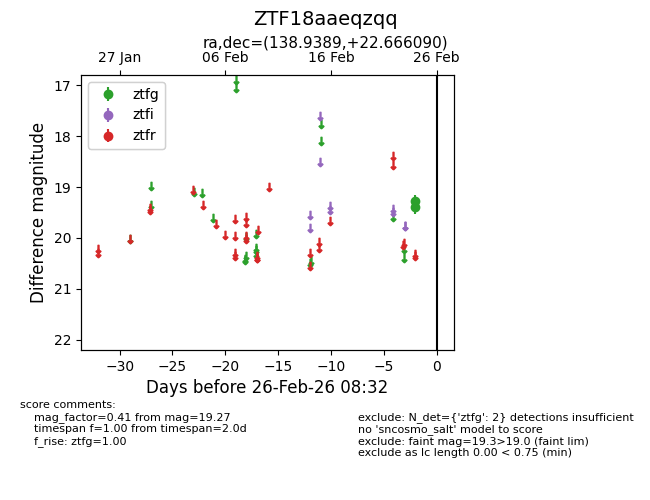
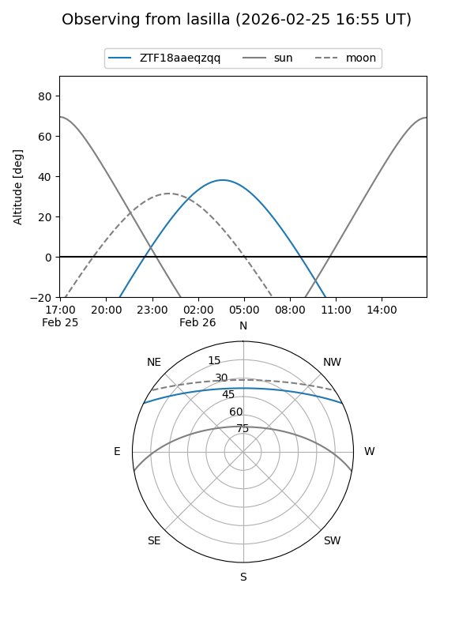
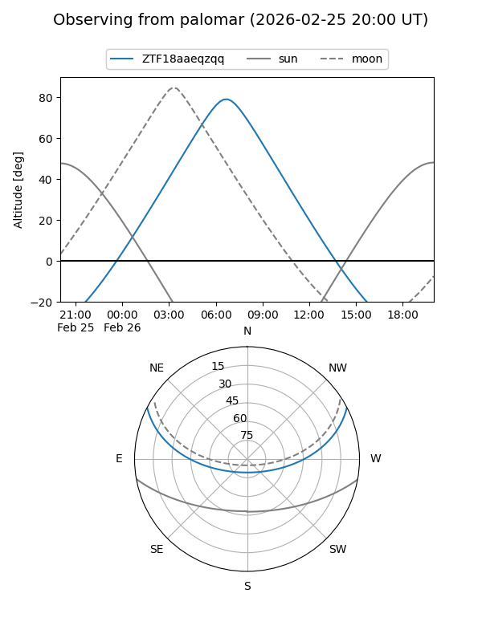

ZTF18aaeqzqq
Target ZTF18aaeqzqq at 2026-02-26 08:33
Aliases and brokers:
FINK: link
Lasair: link
ALeRCE: link
alt names
ZTF18aaeqzqq (ztf,fink_ztf)
Coordinates:
equatorial (ra, dec) = 138.9389,+22.66609
equatorial (HMS+DMS) = 09:15:45.33,+22:39:57.93
galactic (l, b) = (205.6594,+41.25089)
Flags:
Photometry:
last ztfg=19.27
2 ztfg detections
Lightcurve

Visibility


Additional plots